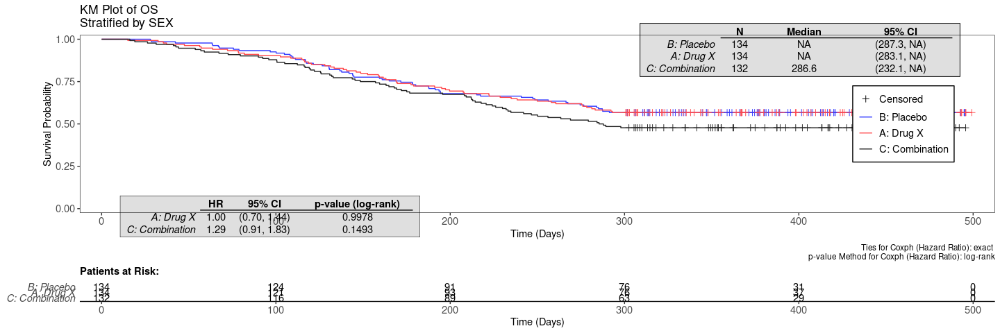
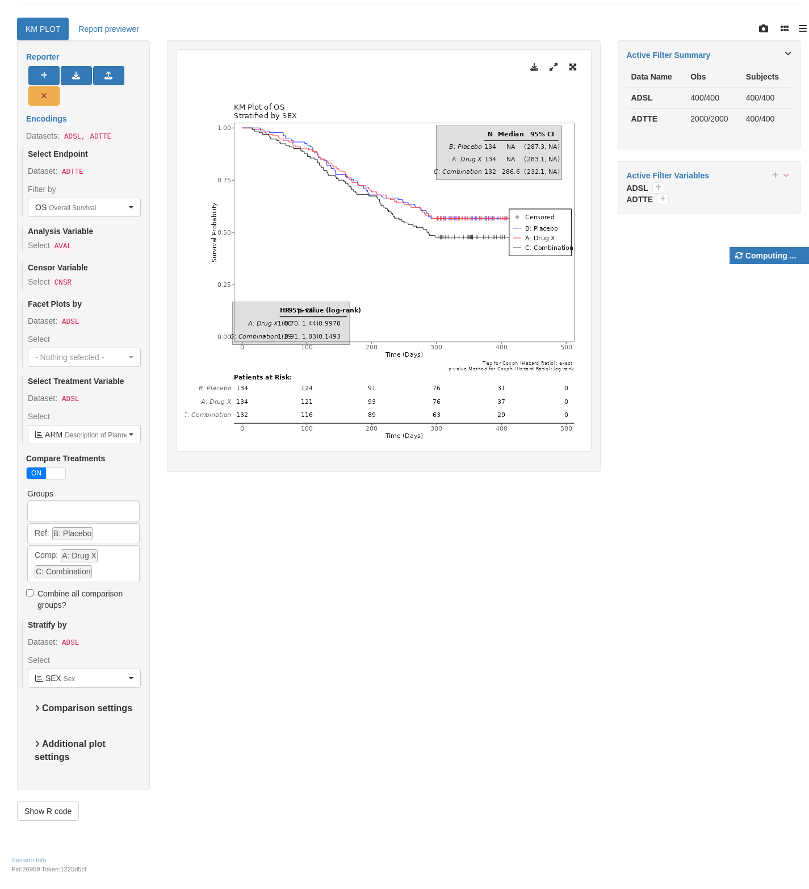

KMG01
Kaplan-Meier Plot
Output
Code
variables$strata <- c("STRATA1", "STRATA2")
plot <- g_km(
df = anl,
variables = variables,
control_surv = control_surv_timepoint(conf_level = 0.8),
xlab = "Time (Days)",
ylim = c(0, 1),
annot_coxph = TRUE,
control_coxph_pw = control_coxph(
pval_method = "wald",
ties = "breslow",
conf_level = 0.8
)
)
plot
teal App
Code
Warning: `datanames<-()` was deprecated in teal.data 0.6.1.
ℹ invalid to use `datanames()<-` or `names()<-` on an object of class
`teal_data`. See ?names.teal_dataCode
join_keys(data) <- default_cdisc_join_keys[datanames]
arm_ref_comp <- list(
ACTARMCD = list(
ref = "ARM B",
comp = c("ARM A", "ARM C")
),
ARM = list(
ref = "B: Placebo",
comp = c("A: Drug X", "C: Combination")
)
)
## Reusable Configuration For Modules
ADSL <- data[["ADSL"]]
ADTTE <- data[["ADTTE"]]
## Setup App
app <- init(
data = data,
modules = modules(
tm_g_km(
label = "KM PLOT",
plot_height = c(600, 100, 2000),
dataname = "ADTTE",
arm_var = choices_selected(
variable_choices(ADSL, c("ARM", "ARMCD", "ACTARMCD")),
"ARM"
),
paramcd = choices_selected(
value_choices(ADTTE, "PARAMCD", "PARAM"),
"OS"
),
arm_ref_comp = arm_ref_comp,
strata_var = choices_selected(
variable_choices(ADSL, c("SEX", "BMRKR2")),
"SEX"
),
facet_var = choices_selected(
variable_choices(ADSL, c("SEX", "BMRKR2")),
NULL
)
)
)
)
shinyApp(app$ui, app$server)

Experimental use!
shinylive allow you to modify to run shiny application entirely in the web browser. Modify the code below and click re-run the app to see the results. The performance is slighly worse and some of the features (e.g. downloading) might not work at all.
#| '!! shinylive warning !!': |
#| shinylive does not work in self-contained HTML documents.
#| Please set `embed-resources: false` in your metadata.
#| standalone: true
#| viewerHeight: 800
#| editorHeight: 200
#| components: [viewer, editor]
#| layout: vertical
# -- WEBR HELPERS --
options(webr_pkg_repos = c("r-universe" = "https://pharmaverse.r-universe.dev", getOption("webr_pkg_repos")))
# -- APP CODE --
library(teal.modules.clinical)
## Data reproducible code
data <- teal_data()
data <- within(data, {
ADSL <- random.cdisc.data::cadsl
ADTTE <- random.cdisc.data::cadtte
})
datanames <- c("ADSL", "ADTTE")
datanames(data) <- datanames
join_keys(data) <- default_cdisc_join_keys[datanames]
arm_ref_comp <- list(
ACTARMCD = list(
ref = "ARM B",
comp = c("ARM A", "ARM C")
),
ARM = list(
ref = "B: Placebo",
comp = c("A: Drug X", "C: Combination")
)
)
## Reusable Configuration For Modules
ADSL <- data[["ADSL"]]
ADTTE <- data[["ADTTE"]]
## Setup App
app <- init(
data = data,
modules = modules(
tm_g_km(
label = "KM PLOT",
plot_height = c(600, 100, 2000),
dataname = "ADTTE",
arm_var = choices_selected(
variable_choices(ADSL, c("ARM", "ARMCD", "ACTARMCD")),
"ARM"
),
paramcd = choices_selected(
value_choices(ADTTE, "PARAMCD", "PARAM"),
"OS"
),
arm_ref_comp = arm_ref_comp,
strata_var = choices_selected(
variable_choices(ADSL, c("SEX", "BMRKR2")),
"SEX"
),
facet_var = choices_selected(
variable_choices(ADSL, c("SEX", "BMRKR2")),
NULL
)
)
)
)
shinyApp(app$ui, app$server)Reproducibility
Timestamp
[1] "2025-01-11 18:05:20 UTC"Session Info
─ Session info ───────────────────────────────────────────────────────────────
setting value
version R version 4.4.1 (2024-06-14)
os Ubuntu 22.04.5 LTS
system x86_64, linux-gnu
ui X11
language (EN)
collate en_US.UTF-8
ctype en_US.UTF-8
tz Etc/UTC
date 2025-01-11
pandoc 3.4 @ /usr/bin/ (via rmarkdown)
─ Packages ───────────────────────────────────────────────────────────────────
package * version date (UTC) lib source
backports 1.5.0 2024-05-23 [1] RSPM
brio 1.1.5 2024-04-24 [1] RSPM
broom 1.0.7 2024-09-26 [1] RSPM
bslib 0.8.0 2024-07-29 [1] RSPM
cachem 1.1.0 2024-05-16 [1] RSPM
callr 3.7.6 2024-03-25 [1] RSPM
checkmate 2.3.2 2024-07-29 [1] RSPM
chromote 0.3.1 2024-08-30 [1] RSPM
cli 3.6.3 2024-06-21 [1] RSPM
coda 0.19-4.1 2024-01-31 [1] CRAN (R 4.4.1)
codetools 0.2-20 2024-03-31 [2] CRAN (R 4.4.1)
colorspace 2.1-1 2024-07-26 [1] RSPM
cowplot 1.1.3 2024-01-22 [1] RSPM
curl 6.1.0 2025-01-06 [1] RSPM
digest 0.6.37 2024-08-19 [1] RSPM
dplyr * 1.1.4 2023-11-17 [1] RSPM
emmeans 1.10.6 2024-12-12 [1] RSPM
estimability 1.5.1 2024-05-12 [1] RSPM
evaluate 1.0.3 2025-01-10 [1] RSPM
farver 2.1.2 2024-05-13 [1] RSPM
fastmap 1.2.0 2024-05-15 [1] RSPM
fontawesome 0.5.3 2024-11-16 [1] RSPM
formatR 1.14 2023-01-17 [1] CRAN (R 4.4.1)
formatters * 0.5.10.9000 2025-01-11 [1] https://p~
geepack 1.3.12 2024-09-23 [1] RSPM
generics 0.1.3 2022-07-05 [1] RSPM
ggplot2 3.5.1 2024-04-23 [1] RSPM
glue 1.8.0 2024-09-30 [1] RSPM
gtable 0.3.6 2024-10-25 [1] RSPM
htmltools 0.5.8.1 2024-04-04 [1] RSPM
htmlwidgets 1.6.4 2023-12-06 [1] RSPM
httpuv 1.6.15 2024-03-26 [1] RSPM
jquerylib 0.1.4 2021-04-26 [1] RSPM
jsonlite 1.8.9 2024-09-20 [1] RSPM
knitr 1.49 2024-11-08 [1] RSPM
labeling 0.4.3 2023-08-29 [1] RSPM
later 1.4.1 2024-11-27 [1] RSPM
lattice 0.22-6 2024-03-20 [2] CRAN (R 4.4.1)
lifecycle 1.0.4 2023-11-07 [1] RSPM
logger 0.4.0 2024-10-22 [1] RSPM
magrittr * 2.0.3 2022-03-30 [1] RSPM
MASS 7.3-64 2025-01-04 [1] RSPM
Matrix 1.7-1 2024-10-18 [1] RSPM
memoise 2.0.1 2021-11-26 [1] RSPM
mime 0.12 2021-09-28 [1] RSPM
multcomp 1.4-26 2024-07-18 [1] CRAN (R 4.4.1)
munsell 0.5.1 2024-04-01 [1] RSPM
mvtnorm 1.3-3 2025-01-10 [1] RSPM
nestcolor * 0.1.2.9017 2025-01-11 [1] https://p~
nlme 3.1-166 2024-08-14 [2] CRAN (R 4.4.1)
pillar 1.10.1 2025-01-07 [1] RSPM
pkgcache 2.2.3 2024-09-12 [1] RSPM
pkgconfig 2.0.3 2019-09-22 [1] RSPM
processx 3.8.5 2025-01-08 [1] RSPM
promises 1.3.2 2024-11-28 [1] RSPM
ps 1.8.1 2024-10-28 [1] RSPM
purrr 1.0.2 2023-08-10 [1] RSPM
R6 2.5.1 2021-08-19 [1] RSPM
ragg 1.3.3 2024-09-11 [1] RSPM
random.cdisc.data 0.3.16.9001 2025-01-11 [1] https://p~
rbibutils 2.3 2024-10-04 [1] RSPM
Rcpp 1.0.13-1 2024-11-02 [1] RSPM
Rdpack 2.6.2 2024-11-15 [1] RSPM
rlang 1.1.4 2024-06-04 [1] RSPM
rmarkdown 2.29 2024-11-04 [1] RSPM
rtables * 0.6.11.9000 2025-01-11 [1] https://p~
sandwich 3.1-1 2024-09-15 [1] CRAN (R 4.4.1)
sass 0.4.9 2024-03-15 [1] RSPM
scales 1.3.0 2023-11-28 [1] RSPM
sessioninfo 1.2.2 2021-12-06 [1] any (@1.2.2)
shiny * 1.10.0 2024-12-14 [1] RSPM
shinycssloaders 1.1.0 2024-07-30 [1] RSPM
shinyjs 2.1.0 2021-12-23 [1] RSPM
shinyvalidate 0.1.3 2023-10-04 [1] RSPM
shinyWidgets 0.8.7 2024-09-23 [1] RSPM
stringi 1.8.4 2024-05-06 [1] RSPM
stringr 1.5.1 2023-11-14 [1] RSPM
survival 3.8-3 2024-12-17 [1] RSPM
systemfonts 1.1.0 2024-05-15 [1] RSPM
teal * 0.15.2.9098 2025-01-11 [1] https://p~
teal.code * 0.5.0.9022 2025-01-11 [1] https://p~
teal.data * 0.6.0.9025 2025-01-11 [1] https://p~
teal.logger 0.3.0.9003 2025-01-11 [1] https://p~
teal.modules.clinical * 0.9.1.9043 2025-01-11 [1] https://p~
teal.reporter 0.3.1.9021 2025-01-11 [1] https://p~
teal.slice * 0.5.1.9019 2025-01-11 [1] https://p~
teal.transform * 0.5.0.9020 2025-01-11 [1] https://p~
teal.widgets 0.4.2.9025 2025-01-11 [1] https://p~
tern * 0.9.6.9018 2025-01-11 [1] https://p~
tern.gee 0.1.5.9004 2025-01-11 [1] https://p~
testthat 3.2.2 2024-12-10 [1] RSPM
textshaping 0.4.1 2024-12-06 [1] RSPM
TH.data 1.1-2 2023-04-17 [1] CRAN (R 4.4.1)
tibble 3.2.1 2023-03-20 [1] RSPM
tidyr 1.3.1 2024-01-24 [1] RSPM
tidyselect 1.2.1 2024-03-11 [1] RSPM
vctrs 0.6.5 2023-12-01 [1] RSPM
webshot 0.5.5 2023-06-26 [1] CRAN (R 4.4.1)
webshot2 0.1.1 2023-08-11 [1] RSPM
websocket 1.4.2 2024-07-22 [1] RSPM
withr 3.0.2 2024-10-28 [1] RSPM
xfun 0.50 2025-01-07 [1] RSPM
xtable 1.8-4 2019-04-21 [1] RSPM
yaml 2.3.10 2024-07-26 [1] RSPM
zoo 1.8-12 2023-04-13 [1] CRAN (R 4.4.1)
[1] /usr/local/lib/R/site-library
[2] /usr/local/lib/R/library
──────────────────────────────────────────────────────────────────────────────
.lock file
Download the .lock file and use renv::restore() on it to recreate environment used to generate this website.